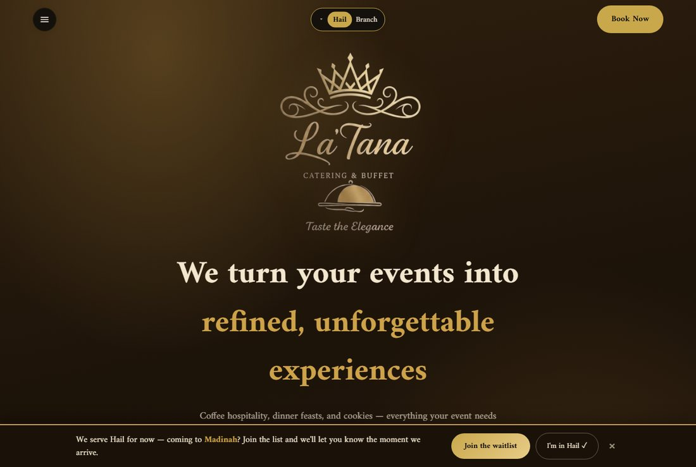
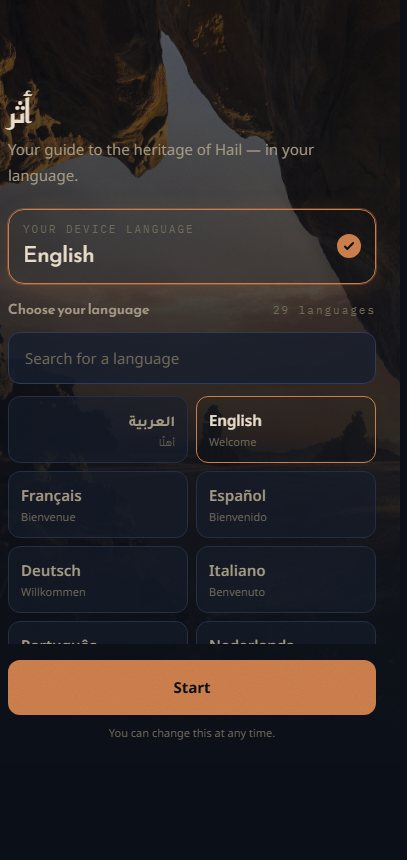

سجل أعمال · حائل، المملكة العربية السعودية · سبتمبر 2026
وليد العودة
مطوّر برمجيات متكامل. أبني برمجيات تضع العربية أولًا، من الفكرة حتى التشغيل.
خريج إدارة أعمال — تخصص محاسبة، ديسمبر 2024. بلا خلفية أكاديمية في علوم الحاسب. أصمّم وأبرمج وأنشر وأشغّل بمفردي أنظمة تعمل في بيئة الإنتاج: الويب، تطبيقات الجوال، تطبيقات سطح المكتب، بوابات الدفع، والذكاء الاصطناعي. جرى التحقق من عمل جميع الروابط الواردة في هذه الصفحة بتاريخ 22 سبتمبر 2026.
أنظمة تعمل الآن في بيئة الإنتاج
يمكن لأي شخص الوصول إليها في هذه اللحظة. وأحدها يستقبل مدفوعات فعلية.
منصة تسويق خدمات الضيافة والبوفيهات في حائل. يحجز العميل مناسبته عبر مسار من ست خطوات، وتنضم مؤسسات الضيافة المستقلة إليها بصفة شركاء، بينما تتولى هي التعامل مع العميل والدفع والجدولة مقابل عمولة على كل طلب.
الجزء الصعب: ثلاث بوابات دفع تعمل فعليًا — «ميسر» لبطاقات مدى وآبل باي، و«تابي» و«تمارا» للتقسيط — مع دورة كاملة من التفويض إلى التحصيل فالتسوية. المتطلبات النظامية السعودية مضمَّنة في صميم قاعدة البيانات لا مضافة إليها لاحقًا: تقسيم عمولات الشركاء والتسوية عبر الآيبان، والتحقق من رخصة «بلدي» ومستندات الدفاع المدني، وحقول الإفصاح المطلوبة من وزارة التجارة لوسطاء التجارة الإلكترونية.

دليل تراثي ذكي لمنطقة حائل. يوجّه الزائر كاميرا جواله نحو نقش صخري أو مبنى تاريخي، فيتعرّف التطبيق على الموقع، ويروي قصته بتسع وعشرين لغة، ثم يبني له مسارًا سياحيًا يراعي حالة الطقس.
الجزء الصعب: التعرّف البصري يعمل بالكامل داخل متصفح الزائر — متجهات تمثيل (embeddings) من نموذج DINOv3 بصيغة ONNX، تُطابَق مع فهرس مرجعي مُعدّ مسبقًا باستخدام تشابه جيب التمام (cosine similarity). اخترتُ المطابقة بالمتجهات بدل تدريب مصنِّف (classifier) عن قصد، حتى تكون إضافة موقع جديد مجرد إضافة صور لا إعادة تدريب نموذج. وعتبة القبول لم تُقدَّر تخمينًا، بل قيست على 198 صورة مطابقة و53 صورة غير مطابقة، مع فحصٍ لبصمة النموذج يرفض أي فهرس غير متوافق بدل أن يعطي نتائج خاطئة بصمت. بلا خادم، وبلا تكلفة لكل مستخدم.

منصة خدمات طلابية وتجارية بالعربية — مشاريع تخرّج وعروض تقديمية وأعمال برمجية — تتصدّرها خمس عشرة أداة مجانية في المتصفح (استخراج نص من الصور، دمج ملفات PDF وتقسيمها، توليد رموز QR والباركود، إزالة الخلفيات) تعمل قناةً لاستقطاب العملاء.
الجزء الصعب: الاستمرارية. ثمانية أشهر من العمل المتواصل بمنهجية فروع وطلبات دمج حقيقية، مع معالجة سليمة للاتجاه من اليمين إلى اليسار وتحسين الظهور في محركات البحث بالعربية، وانتقال تدريجي من صفحات ثابتة مكتوبة يدويًا إلى منصة مبنية على Next.js وSupabase. وتضم أيضًا نظام طلبات يعمل فعليًا في أحد المقاهي بشاشتين منفصلتين: واحدة للعميل وأخرى للباريستا.

ما الذي أستطيع بناءه
كل بند مسنود بعمل مُنفَّذ لا بشهادة دورة. ويوضّح السطر الصغير تحت كل بند أين استُخدم فعليًا.
تطبيقات الويب
ثلاثة مواقع تعمل الآن، نحو 86 ألف سطر، بمعالجة كاملة للعربية وللاتجاه من اليمين إلى اليسار.
الخوادم وقواعد البيانات
واجهات برمجية تعمل في بيئة الإنتاج، ومخططات قواعد بيانات بحجم 36 جدولًا و8 جداول، صُمّمت ونُفِّذت عمليات ترحيلها.
المدفوعات والامتثال السعودي
أموال حقيقية عبر ثلاث بوابات، والمتطلبات النظامية مضمَّنة في صميم قاعدة البيانات.
هندسة الذكاء الاصطناعي
نماذج بصرية داخل المتصفح، واستخراج بيانات من وثائق تعود إلى خمس سنوات بدمج OCR مع نماذج لغوية.
الجوال وسطح المكتب
تطبيق أندرويد أصلي، وتسعة إصدارات موقّعة لسطح المكتب مع نظام تحديث تلقائي.
هندسة تضع العربية أولًا
التخصص الفعلي: واجهات RTL، واستخراج النص العربي، وتوحيد التواريخ والبيانات المحاسبية العربية.
الأتمتة ومعالجة الوثائق
أرشيف عقود يمتد خمس سنوات، ممسوح ضوئيًا، تحوّل إلى مجموعة بيانات واحدة منظمة.
التحليل الكمّي
محرك تداول قائم على أسس إحصائية حقيقية — في مرحلة تجريبية، ودون أي ادعاء بتحقيق عائد.
خبرة مهنية — لدنك العالمية
عملتُ محاسبًا من يوليو إلى نوفمبر 2025، وبنيتُ ما يلي دون أن يُطلب مني ذلك، وخارج نطاق وصفي الوظيفي تمامًا. بيانات الشركة وعملائها سرّية ولا يظهر منها شيء في هذه الصفحة.
أرشيف عقود يمتد خمس سنوات، ممسوح ضوئيًا، تحوّل إلى مجموعة بيانات واحدة منظمة. ثلاث مراحل: استخراج النص عبر Google Cloud Vision من صفحات PDF، ثم استخراج مُهيكل بواسطة نموذج لغوي، ثم توليد ملفات Excel بمعادلات مرتبطة وتنسيق عربي.
الفكرة التي جعلته يعمل: العقد ليس صفًا واحدًا، بل يتمدّد كحاصل ضرب بنود التوريد في دفعات السداد — صنفان على ست دفعات يساويان اثني عشر صفًا لا صفًا واحدًا. أي استخراج مباشر وسطحي يخطئ في هذه النقطة تحديدًا، فتفسد كل الإجماليات بعدها. كما تصحّح مرحلة الاستخراج أخطاء التعرّف الضوئي في النص العربي، وتوحّد صيغ أرقام العقود، وتطابق الأصناف مع تصنيف مرجعي، وترفض أي نتيجة لا يبلغ مجموع نسب الدفعات فيها 100%.
محرك بلغة Power Query يستورد مجلدًا كاملًا من ملفات CSV العربية وينتج تحليل أعمار الذمم على مستوى حسابات العملاء.
لماذا لا تنتجه أداة جاهزة: نحو 54 ألف حرف من كود M مكتوب يدويًا. يصنّف المحرك كل سطر حسب نوعه، ويقرأ التواريخ بالأرقام العربية عبر عدة صيغ غير متسقة، ويفصل بين أرقام المستندات والأرصدة الجارية والمبالغ الفعلية بحسب نوع الحركة، مع رصد الأخطاء لكل سطر على حدة.
تطبيق Electron يقرأ جداول المخزون من ملفات Word، ويصنّف المواد، وينفّذ خوارزمية توزيع الألواح على الأبواب مع عرض تفصيلي للنتيجة. وحُزِم في ملف تنفيذي يُثبَّت على ويندوز، إلى جانب حاسبة أبواب مرافقة.
أنظمة مكتملة لم تُطرح بعد
أنظمة حقيقية تعمل لكنها لم تُطرح للمستخدمين — أذكر ذلك صراحةً، لأن بعض أقوى الأعمال الهندسية هنا موجود في هذه القائمة تحديدًا.
تطبيق سطح مكتب لمجتمعات اللاعبين — خوادم وقنوات صوتية، ومحتوى، وبث مباشر، ونقاط تفاعل، ومتجر — سُلِّم في صورة تطبيق ويندوز.
الجزء النادر: تسعة مثبّتات موقّعة ومتسلسلة من الإصدار 1.0.0 حتى 1.6.1 مع نظام تحديث تلقائي يعمل. معظم المشاريع لا تصل إلى إصدار ثانٍ أصلًا، لأن بناء خط الإصدار عمل غير مرئي لا يناله تقدير يُذكر. والطبقة الصوتية شبكة WebRTC مكتوبة يدويًا مع خاصية الضغط للتحدث وتموضع صوتي، لا حزمة جاهزة. أُنجز خلال ثلاثة عشر يومًا.
منصة خدمات طلابية سعودية بمعلّم ذكي يضع العربية أولًا، ونحو ستين أداة في المتصفح، مبنية مرتين: مرةً تطبيقَ ويب بـ Next.js ومرةً تطبيقًا أصليًا لأندرويد — مع خدمة OCR منفصلة بلغة Python خلفهما.
تفكير في المنتج لا مجرد واجهة: تعليمات المعلّم الذكي مضبوطة على السياق التعليمي السعودي: عربية فصحى مع فهم اللهجة النجدية، وإخراج المعادلات الرياضية بصيغة LaTeX، ورفض صريح لكتابة واجبات الطالب نيابةً عنه.
محرك تداول خوارزمي متوافق مع الضوابط الشرعية، للسوق المالية السعودية (تداول) والأسهم الأمريكية، بخدمة خلفية FastAPI ولوحة تحكم React.
الإحصاءات حقيقية، أما السجل فلا. يعتمد منطق العودة إلى المتوسط على أُس هيرست واختبار ADF للاستقرارية وتقدير نصف عمر الارتداد وفق نموذج أورنشتاين-أولنبيك، مع تحديد أحجام المراكز بمعيار كيلي، ومحرك قواعد فعلي للفرز الشرعي — حدود نسبة الدين إلى الأصول، واستبعاد القطاعات، ومنع عقود المقايضة، وحد أدنى لمدة الاحتفاظ. لم يتداول فعليًا قط، ولا توجد نتائج اختبار رجعي، ولذلك لا يُذكر أي رقم عائد.
خدمة خلفية لمنصة خدمة عملاء تعمل بالذكاء الاصطناعي عبر قنوات متعددة، موجّهة للمدارس والمنشآت الصغيرة السعودية — محادثة ويب وواتساب، مع قاعدة معرفة مستقلة لكل جهة.
مبنيّ على واجهة المنصة الفعلية لا على محاكاة لها: يتصل مباشرة بواجهة Meta Graph، مع خدمات مخصصة لاعتماد قوالب واتساب وحدود معدل الإرسال — وهي قيود لا يعالجها إلا من قرأ شروط المنصة فعلًا. يعتمد على توليد معزَّز بالاسترجاع (RAG) مع درجة ثقة لكل إجابة، وتبديل تلقائي بين مزوّدي النماذج عند الإخفاق. لم يُنشر في بيئة إنتاج.
تطبيق منهج دراسي ثنائي اللغة من ستة وعشرين أسبوعًا، بنيتُه من الصفر لأعلّم نفسي معيار التشغيل البيني الصحي HL7 FHIR إلى مستوى الشهادة الاحترافية.
توضيحًا: هذا دليل على دراسة المجال، لا على خبرة تطبيقية في تنفيذ FHIR. الأسابيع المكتملة تغطي البنية المفاهيمية للمعيار ومبادئ REST ودلالات موارد الأدوية. وما بعدها لم يُكتب بعد.
كيف وصلتُ إلى هنا
ثمانية عشر شهرًا، مرتّبة زمنيًا.
أعمال أخرى
أصغر حجمًا أو أقدم زمنًا، وتتفاوت في درجة اكتمالها.